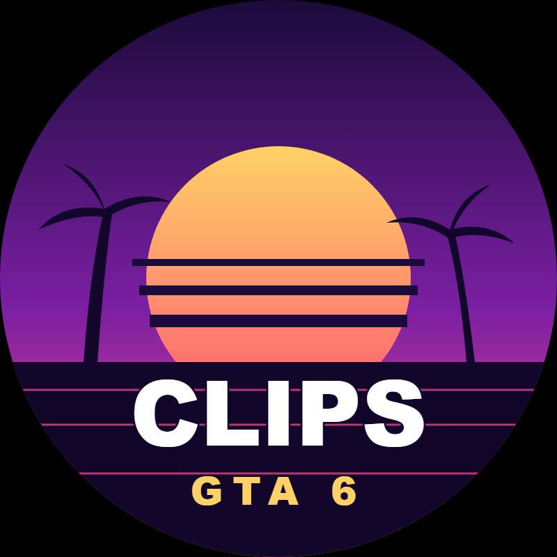

Yomi MitsYomi Mits — GTA 6 clips
Yomi Mits is a YouTube channel that publishes short vertical clips about GTA 6.
The clips are taken from long videos that their creators released under a Creative Commons Attribution license. Every clip credits the original channel and links to the original video in its description.
To publish the clips, the channel uses a small private tool called Clipping. It connects only to this channel's own YouTube account through Google's official sign-in, and it is used only by the channel owner.
Channel: youtube.com/@yomivirals